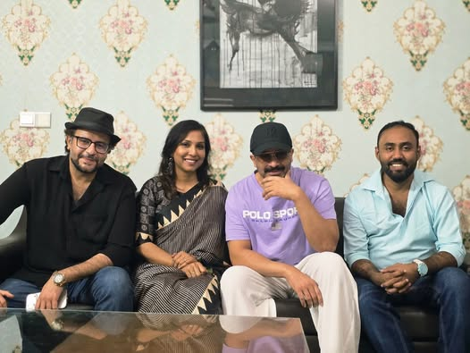

নতুন সিনেমায় কাজ করছেন শাকিব খান। আজ বৃহস্পতিবার সন্ধ্যায় রিয়েল এনার্জি প্রোডাকশনের সিনেমায় নাম লেখান তিনি। ছবির নাম প্রকাশ করা হয়নি।
এর আগে প্রযোজনা প্রতিষ্ঠানটির ব্যানারে ‘বরবাদ’ সিনেমায় শাকিব খানকে দেখা গেছে। সিনেমাটি পরিচালনা করেছেন মেহেদী হাসান।
‘বরবাদ’ টিমের সঙ্গে আরেক সিনেমায় দেখা যাবে শাকিব খানকে। তবে এটি ‘বরবাদ’ সিনেমার সিক্যুয়েল নয়। আজ চুক্তির পর প্রযোজক ও পরিচালকদের সঙ্গে তোলা একটি ছবি ফেসবুকে পোস্ট করেছেন শাকিব খান। পোস্টে তিনি লিখেছেন, ‘“বরবাদ” টিম আবার ফিরছে। চলুন, আবার ইতিহাস গড়ি।’

এক ঘণ্টার ব্যবধানে পোস্টটিতে ৩৫ হাজারের বেশি ‘রিঅ্যাক্ট’ পড়েছে। দুই হাজারের বেশি মন্তব্য জমা পড়েছে। রাব্বি হাসান নামের এক অনুরাগী লিখেছেন, ‘বরবাদ টিম মানেই আগুন।’
পরিচালক মেহেদী হাসান প্রথম আলোকে জানান, সিনেমাটি অ্যাকশনধর্মী। সিনেমার নাম, অন্য শিল্পী কারা, শুটিং কবে থেকে, তা আনুষ্ঠানিকভাবে জানাবে প্রযোজনা প্রতিষ্ঠান।
পরিচালক বলেন, ‘“বরবাদ”–এর পর দর্শকদের জন্য আরেকটি ভালো সিনেমা নিয়ে আসছি আমরা।’